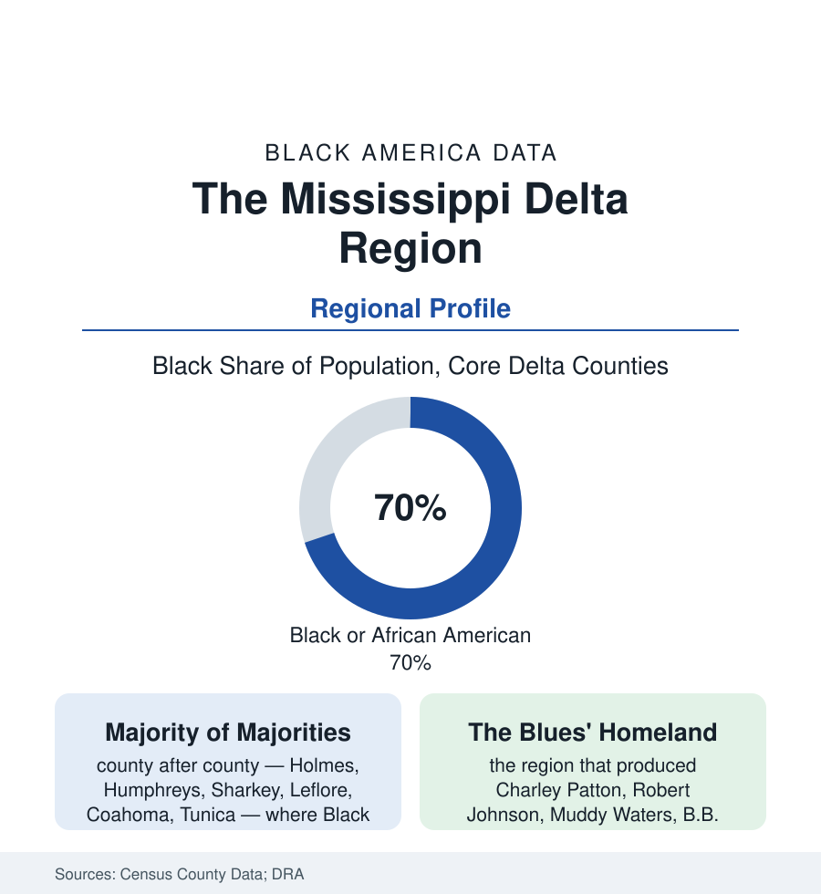

Black Census
The Mississippi Delta: The Blackest Region in America, County by County
Across the Delta's river counties, Black majorities of 60-80% govern the poorest ground in the nation — and its richest cultural soil. The regional data portrait.

Draw the Delta on the census map — the flat alluvial crescent running from Memphis down the Mississippi's east bank through Mississippi, Arkansas, and Louisiana — and the race table resolves into the starkest pattern in this atlas: county after county where Black residents form not a share but the society itself, sixty to eighty percent of the population across the core counties in the 2020 census, governing the poorest ground in the United States and the soil that grew its defining music. The state profiles count pieces of this region. This article counts it whole.
The Ground and the Majority
The Delta's demography was engineered by its cotton: the nineteenth century's clearing of the bottomland (some of the most brutal labor in the slavery record — the Delta was settled late and worked hardest) made the region's Black population a majority from its founding clearings, and the twentieth century's numbers held the shape through every migration (the Great Migration drew hundreds of thousands out of the Delta — Chicago's South Side is substantially a Delta colony, its churches and blues clubs the region's northern parishes — and still the counties stayed majority-Black, the out-migration matched against the white out-migration to the hill counties and the suburbs). The county table is the file: Holmes and Humphreys counties at the top of the national Black-share rankings, Sharkey and Issaquena, Leflore (Greenwood), Coahoma (Clarksdale), Quitman, Tallahatchie, Tunica, Bolivar (Cleveland and Mound Bayou — the all-Black town founded in 1887 standing in Bolivar County still, its own article's subject in the cities file's tradition), the Arkansas shore's Phillips and Lee, Louisiana's East Carroll at the crescent's foot. The governance data complete the demographic fact: these majorities elect — the Black sheriffs, chancery clerks, supervisors, and school boards of the Delta counties constituting one of the largest bodies of Black elected officialdom on earth, the Voting Rights era's harvest in its most concentrated form, exercised over tax bases the poverty data rank at the nation's floor.
The Ledger: Poverty, Health, and the Land
The Delta's economic numbers are the census's hardest: persistent-poverty county designations across the crescent (the federal category for counties poor in every census for decades — the Delta its largest cluster), median household incomes in the twenties and low thirties of thousands in the core counties, the health file's worst rows stacked in one region (the diabetes and amputation data's Delta peak, the hospital closures' map, life expectancies in the core counties running a decade under the national figure in the county health data — the American region whose health profile demographers compare, without hyperbole, to far poorer nations'), and the land file's long subtraction (the heirs'-property and Black land-loss data centered here — the Delta's Black farm ownership collapsing across the century in the agricultural census, a fraction of the region's Black families still farming the ground their labor made valuable, the catfish and casino economies — Tunica's gaming strip the region's strangest ledger line, a gambling boom that raised the county's revenue while its poverty rate barely bent in the evaluations). The institutions answering the ledger are the region's own: Delta State and Mississippi Valley State (the HBCU at Itta Bena in Leflore County), the community colleges, the FQHC clinic network the health file leans on, the Delta Regional Authority's federal grants, and the church and family structures the migration made binational — the Chicago-Delta circuit's remittances, funerals, and homecomings moving money and people on the old Highway 61 line in both directions, in the data and in the songs alike.
The Culture the Ground Grew
No demographic article in this atlas can close its region without the output table, because the Delta's is not comparable: within a hundred-mile radius of Clarksdale, the record holds Charley Patton, Robert Johnson, Son House, Muddy Waters, Howlin' Wolf, John Lee Hooker, B.B. King, Ike Turner, Sam Cooke's Clarksdale birth, and the gospel and soul lines running through them all — the blues as the region's literature, composed by the sharecropping generation the census counted at the bottom of every table it kept. The heritage economy is the culture's current data form: the blues trail markers and museums (the Delta Blues Museum, the B.B. King Museum at Indianola), the juke joints' last generation, the festival calendar drawing the world's visitors into counties with no other tourism line — a revenue the region argues over how to keep (the heritage file's Delta edition: whose museum, whose tour, whose royalty — the ownership questions of the business file in their oldest American setting). The demographers and the musicians are describing the same counties. One set of tables says the poorest ground in America. The other says the richest. The census, read whole, says both — and that the people in the majority in both counts are the same people, still there, still governing, still singing.
Reading the Delta's Numbers
Seventy percent across a region, a decade of life expectancy missing, and the foundational music of the modern world: the Delta is this atlas in miniature, its every file compressed into eighteen counties of flat black ground. The numbers do not reconcile themselves. They just stand there together, census after census, waiting for a reader willing to hold them all at once.
More in Black Census
The Black Population of the United States: Size, Definitions, and Distribution
The Black population of the United States totals 52.8 million — 15.4 percent of the nation. How the Census Bureau defines and counts the population, and where it lives.
Black Median Household Income in the United States
Black median household income stands at $56,490 in the Census Bureau's annual income report — how the figure is measured, how it compares, and what drives it.
The Black Poverty Rate: Levels, Children, and the Long Trend
The official Black poverty rate is 17.1 percent — against 11.1 percent nationally and 7.7 percent for non-Hispanic White Americans. How poverty is measured and what the data show.
Source: U.S. Census Bureau, 2020 Census and American Community Survey 5-year estimates (county data); Delta Regional Authority; Delta Center for Culture and Learning, Delta State University.